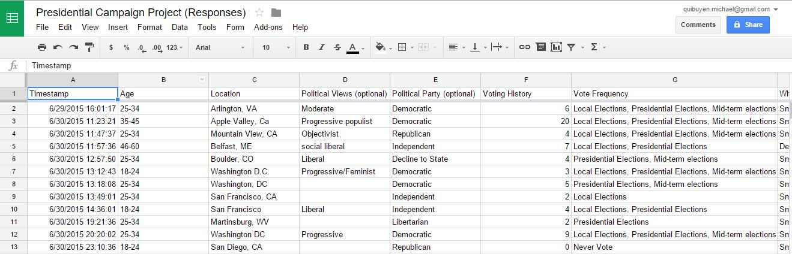
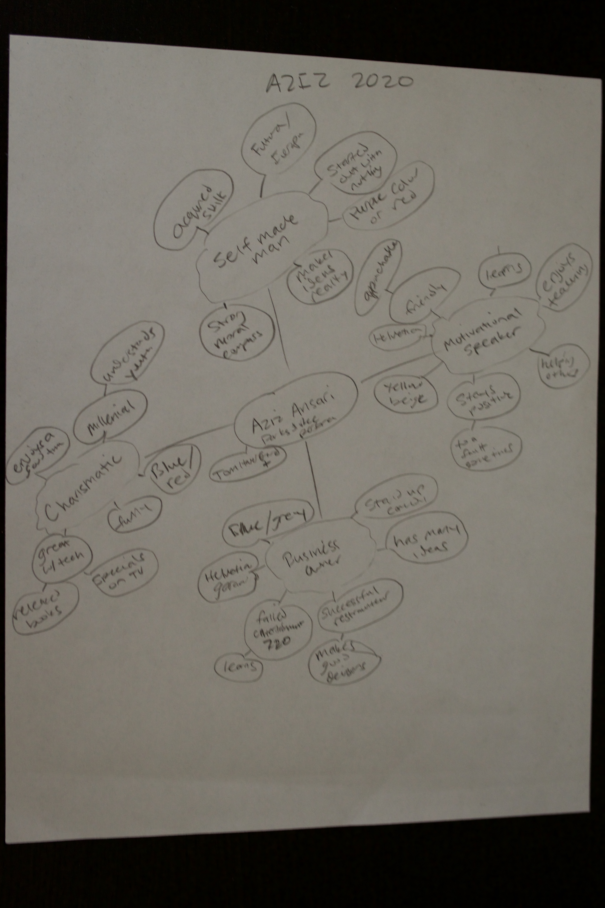

Aziz Ansari for President
Mock Campaign Website
Web Design // Prototyping // inVision // Illustrator // Photoshop
Elected officials have started to embrace the intersection of technology and connecting to the people on multiple devices to maximize their outreach. I have worked in government since 2013 and seeing how offices can help people with navigating our political system. Through the Bloc Apprenticeship I was tasked with creating a mock campaign website. The reason I chose Aziz Ansari is because of his meteoric break into the entertainment industry as an Asian-Pacific American, which many of us are underrepresented in, permeates into the politics as well.
Goals
1. Create a younger or more modern look and feel for a political campaign
2. Simplify the registration and donation process
3. Allow many opportunities for outreach through a user account or through events
Research
I started looking at other Presidential campaign websites through 4president.org, which has a collection of campaign logos, signs, and landing pages that are available for viewing. This helped me look at patterns to help me create a good user flow when someone wants to register for an account, donate to a campaign, as well as volunteer at events, and manage people. The websites followed similar flows that tried to start people at a landing page to get personal information, then make it easy to donate from the landing page, and view events quickly with a few clicks.
User Flow and Wireframing
After conducting the research and finding out the nuances of campaign websites I was able to draft user stories based on an identity map I created for Aziz Ansari. However, I needed more information regarding the people who would use these websites, so I created a survey that would ask these questions to a random set of people. Once I reviewed the data, I was able to create user personas based on the answers I received so that the mock campaign website would address the concerns of the people.

Branding and Prototyping
I then created a campaign logo with a punchy color palette that would be a more modern take on a campaign website, which is different than what’s out there at the moment. Then, I created high-fidelity screenshots using Photoshop and the inspiration from my research to create the mock campaign website. Once this process was complete, I put together a prototype in the inVision app to see how the user flow would work if this was a live product.


Test and Iterate
I had people in the design as well as political industry test the mock campaign website and there was feedback mainly on the volunteering and donation portions. I took all of those critiques into account and what you will see on inVision is the final prototype.

Interested in working together? Please send me an e-mail.